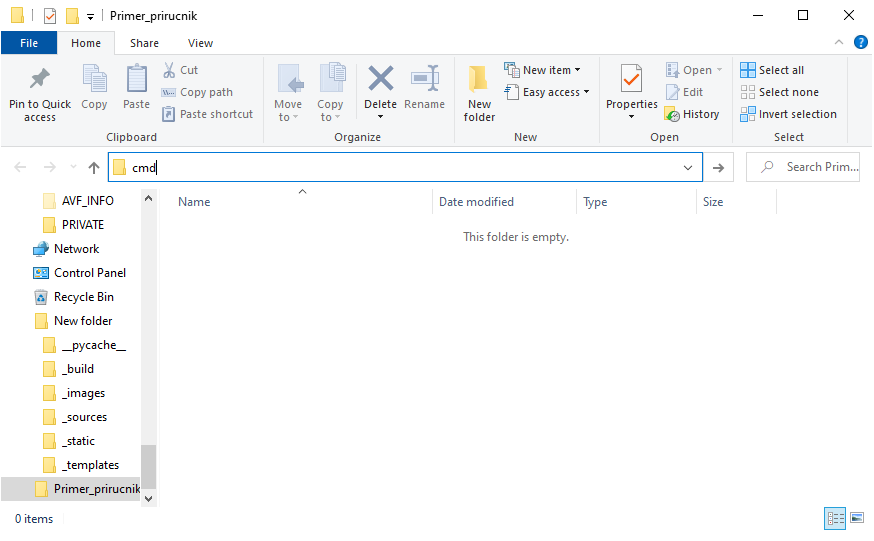
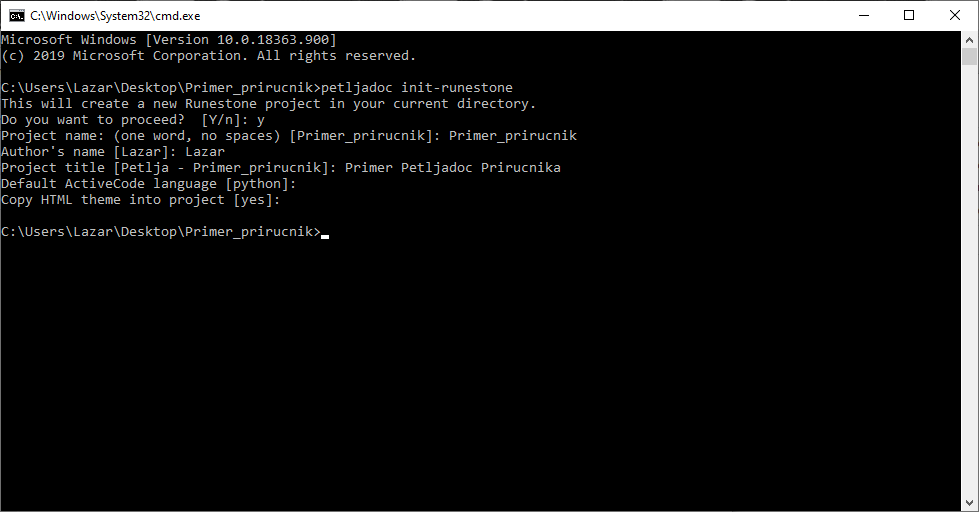
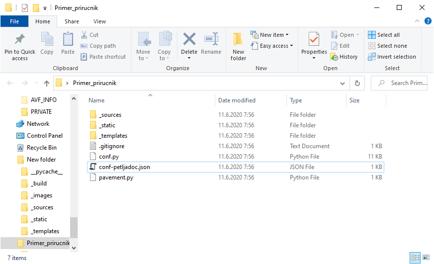
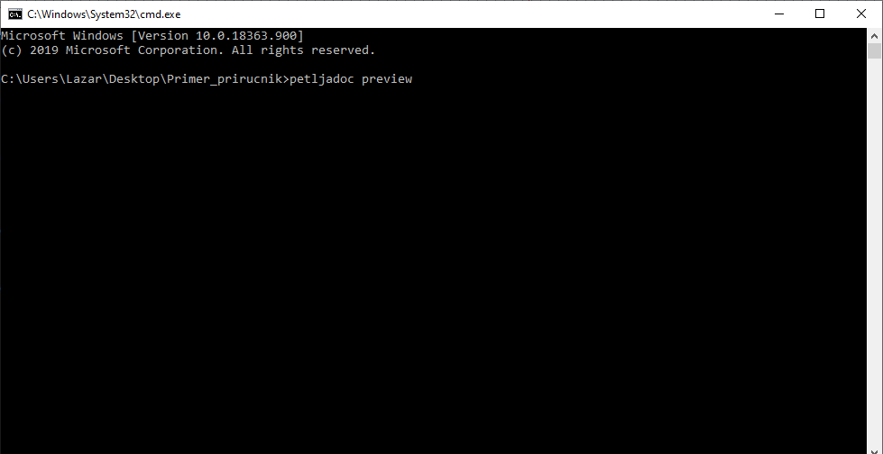
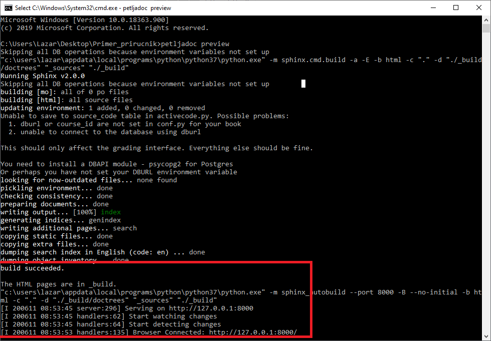
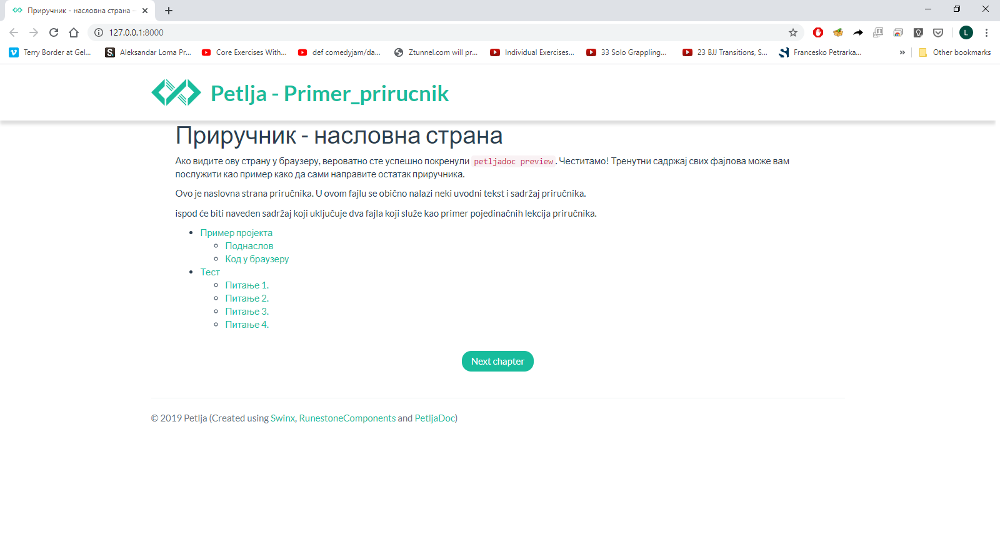
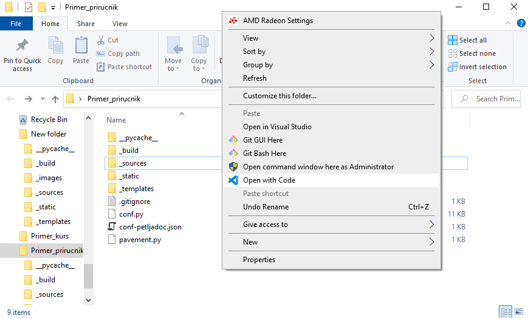
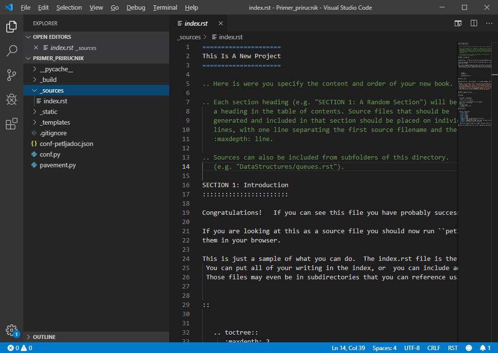
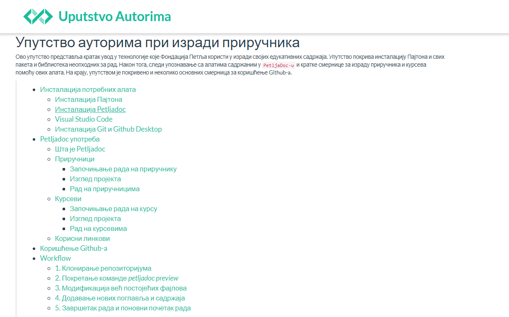

<!DOCTYPE html>
<html xmlns="http://www.w3.org/1999/xhtml" lang=""></html>
  <head>
    <meta charset="utf-8" />
    <meta name="viewport" content="width=device-width, initial-scale=1.0" />
<title>Приручници &#8212; Uputstvo Autorima</title>
    <link rel="stylesheet" href="_static/pygments.css" type="text/css" />
    <link rel="stylesheet" href="_static/basic.css" type="text/css" />
    <link rel="stylesheet" type="text/css" href="_static/activecode.css" />
    <link rel="stylesheet" type="text/css" href="_static/codemirror.css" />
    <link rel="stylesheet" type="text/css" href="_static/clickable.css" />
    <link rel="stylesheet" type="text/css" href="_static/pytutor.css" />
    <link rel="stylesheet" type="text/css" href="_static/modal-basic.css" />
    <link rel="stylesheet" type="text/css" href="_static/datafile.css" />
    <link rel="stylesheet" type="text/css" href="_static/dragndrop.css" />
    <link rel="stylesheet" type="text/css" href="_static/fitb.css" />
    <link rel="stylesheet" type="text/css" href="_static/matrixeq.css" />
    <link rel="stylesheet" type="text/css" href="_static/parsons.css" />
    <link rel="stylesheet" type="text/css" href="_static/lib/prettify.css" />
    <link rel="stylesheet" type="text/css" href="_static/poll.css" />
    <link rel="stylesheet" type="text/css" href="_static/showEval.css" />
    <link rel="stylesheet" type="text/css" href="_static/tabbedstuff.css" />
    <link rel="stylesheet" type="text/css" href="https://stackpath.bootstrapcdn.com/bootstrap/4.2.1/css/bootstrap.min.css" />
    <link rel="stylesheet" type="text/css" href="_static/video.css" />
    <link rel="stylesheet" type="text/css" href="_static/webgldemo.css" />
    <link rel="stylesheet" type="text/css" href="_static/webglinteractive.css" />
    <link rel="stylesheet" type="text/css" href="_static/karel.css" />
    <link rel="stylesheet" type="text/css" href="_static/notes.css" />
    <link rel="stylesheet" type="text/css" href="_static/simanim.css" />
    <link rel="stylesheet" type="text/css" href="_static/pycode.css" />
    <link rel="stylesheet" type="text/css" href="_static/p5js.css" />
    <link rel="stylesheet" type="text/css" href="_static/gallery.css" />
    <link rel="stylesheet" type="text/css" href="_static/dbDirective.css" />
    <link rel="stylesheet" href="_static/user-highlights.css" type="text/css" />
    <link rel="stylesheet" href="https://use.fontawesome.com/releases/v5.1.1/css/all.css" type="text/css" />
    <link rel="stylesheet" href="_static/bootstrap-4.0.0-dist/css/bootstrap.min.css" type="text/css" />
    <link rel="stylesheet" href="_static/flatly.min.css" type="text/css" />
    <link rel="stylesheet" href="_static/petlja-runestone.css" type="text/css" />
    <link rel="stylesheet" href="_staticnbstyle.css" type="text/css" />
    <script id="documentation_options" data-url_root="./" src="_static/documentation_options.js"></script>
    <script type="text/javascript" src="_static/runestonebase.js"></script>
    <script type="text/javascript" src="_static/skulpt-stdlib.js"></script>
    <script type="text/javascript" src="_static/skulpt.min.js"></script>
    <script type="text/javascript" src="_static/jquery.js"></script>
    <script type="text/javascript" src="_static/underscore.js"></script>
    <script type="text/javascript" src="_static/doctools.js"></script>
    <script type="text/javascript" src="_static/language_data.js"></script>
    <script type="text/javascript" src="_static/jquery.highlight.js"></script>
    <script type="text/javascript" src="_static/bookfuncs.js"></script>
    <script type="text/javascript" src="_static/codemirror.js"></script>
    <script type="text/javascript" src="_static/xml.js"></script>
    <script type="text/javascript" src="_static/css.js"></script>
    <script type="text/javascript" src="_static/python.js"></script>
    <script type="text/javascript" src="_static/htmlmixed.js"></script>
    <script type="text/javascript" src="_static/javascript.js"></script>
    <script type="text/javascript" src="_static/jquery_i18n/CLDRPluralRuleParser.js"></script>
    <script type="text/javascript" src="_static/jquery_i18n/jquery.i18n.js"></script>
    <script type="text/javascript" src="_static/jquery_i18n/jquery.i18n.messagestore.js"></script>
    <script type="text/javascript" src="_static/jquery_i18n/jquery.i18n.fallbacks.js"></script>
    <script type="text/javascript" src="_static/jquery_i18n/jquery.i18n.language.js"></script>
    <script type="text/javascript" src="_static/jquery_i18n/jquery.i18n.parser.js"></script>
    <script type="text/javascript" src="_static/jquery_i18n/jquery.i18n.emitter.js"></script>
    <script type="text/javascript" src="_static/jquery_i18n/jquery.i18n.emitter.bidi.js"></script>
    <script type="text/javascript" src="_static/activecode-i18n.en.js"></script>
    <script type="text/javascript" src="_static/activecode.js"></script>
    <script type="text/javascript" src="_static/clike.js"></script>
    <script type="text/javascript" src="_static/timed_activecode.js"></script>
    <script type="text/javascript" src="_static/animationbase.js"></script>
    <script type="text/javascript" src="_static/mchoice.js"></script>
    <script type="text/javascript" src="_static/timedmc.js"></script>
    <script type="text/javascript" src="_static/timed.js"></script>
    <script type="text/javascript" src="_static/mchoice-i18n.en.js"></script>
    <script type="text/javascript" src="_static/clickable.js"></script>
    <script type="text/javascript" src="_static/timedclickable.js"></script>
    <script type="text/javascript" src="_static/d3.v2.min.js"></script>
    <script type="text/javascript" src="_static/jquery.ba-bbq.min.js"></script>
    <script type="text/javascript" src="_static/jquery.jsPlumb-1.3.10-all-min.js"></script>
    <script type="text/javascript" src="_static/pytutor.js"></script>
    <script type="text/javascript" src="_static/codelens.js"></script>
    <script type="text/javascript" src="_static/skulpt.min.js"></script>
    <script type="text/javascript" src="_static/skulpt-stdlib.js"></script>
    <script type="text/javascript" src="_static/datafile.js"></script>
    <script type="text/javascript" src="_static/dragndrop.js"></script>
    <script type="text/javascript" src="_static/timeddnd.js"></script>
    <script type="text/javascript" src="_static/dragndrop-i18n.en.js"></script>
    <script type="text/javascript" src="_static/fitb.js"></script>
    <script type="text/javascript" src="_static/timedfitb.js"></script>
    <script type="text/javascript" src="_static/fitb-i18n.en.js"></script>
    <script type="text/javascript" src="_static/matrixeq.js"></script>
    <script type="text/javascript" src="_static/lib/prettify.js"></script>
    <script type="text/javascript" src="_static/lib/hammer.min.js"></script>
    <script type="text/javascript" src="_static/parsons.js"></script>
    <script type="text/javascript" src="_static/parsons-i18n.en.js"></script>
    <script type="text/javascript" src="_static/timedparsons.js"></script>
    <script type="text/javascript" src="_static/poll.js"></script>
    <script type="text/javascript" src="_static/reveal.js"></script>
    <script type="text/javascript" src="_static/shortanswer.js"></script>
    <script type="text/javascript" src="_static/timed_shortanswer.js"></script>
    <script type="text/javascript" src="_static/showEval.js"></script>
    <script type="text/javascript" src="_static/tabbedstuff.js"></script>
    <script type="text/javascript" src="_static/runestonevideo.js"></script>
    <script type="text/javascript" src="_static/webglinteractive.js"></script>
    <script type="text/javascript" src="_static/FileSaver.min.js"></script>
    <script type="text/javascript" src="_static/Blob.js"></script>
    <script type="text/javascript" src="_static/karelCorner.js"></script>
    <script type="text/javascript" src="_static/karelRobot.js"></script>
    <script type="text/javascript" src="_static/karelWorld.js"></script>
    <script type="text/javascript" src="_static/karelRobotDrawer.js"></script>
    <script type="text/javascript" src="_static/karelUI.js"></script>
    <script type="text/javascript" src="_static/karel.js"></script>
    <script type="text/javascript" src="_static/karel-i18n.en.js"></script>
    <script type="text/javascript" src="_static/notes.js"></script>
    <script type="text/javascript" src="_static/pygamelib-init.js"></script>
    <script type="text/javascript" src="_static/blockly/blockly_compressed.js"></script>
    <script type="text/javascript" src="_static/blockly/blocks_compressed.js"></script>
    <script type="text/javascript" src="_static/blockly/python_compressed.js"></script>
    <script type="text/javascript" src="_static/blockly/msg-sr.js"></script>
    <script type="text/javascript" src="_static/blockpy/utilities.js"></script>
    <script type="text/javascript" src="_static/blockpy/python_errors.js"></script>
    <script type="text/javascript" src="_static/blockpy/ast_node_visitor.js"></script>
    <script type="text/javascript" src="_static/blockpy/abstract_interpreter.js"></script>
    <script type="text/javascript" src="_static/blockpy/pytifa.js"></script>
    <script type="text/javascript" src="_static/blockpy/abstract_interpreter_definitions.js"></script>
    <script type="text/javascript" src="_static/blockpy/python_to_blockly.js"></script>
    <script type="text/javascript" src="_static/blockpy/imported.js"></script>
    <script type="text/javascript" src="_static/blockpy/blocks/class.js"></script>
    <script type="text/javascript" src="_static/blockpy/blocks/comment.js"></script>
    <script type="text/javascript" src="_static/blockpy/blocks/comprehensions.js"></script>
    <script type="text/javascript" src="_static/blockpy/blocks/dict.js"></script>
    <script type="text/javascript" src="_static/blockpy/blocks/if.js"></script>
    <script type="text/javascript" src="_static/blockpy/blocks/io.js"></script>
    <script type="text/javascript" src="_static/blockpy/blocks/lists.js"></script>
    <script type="text/javascript" src="_static/blockpy/blocks/sets.js"></script>
    <script type="text/javascript" src="_static/blockpy/blocks/loops.js"></script>
    <script type="text/javascript" src="_static/blockpy/blocks/parking.js"></script>
    <script type="text/javascript" src="_static/blockpy/blocks/tuple.js"></script>
    <script type="text/javascript" src="_static/blockpy/blocks/turtles.js"></script>
    <script type="text/javascript" src="_static/blockpy/blocks/text.js"></script>
    <script type="text/javascript" src="_static/blockpy-modal.js"></script>
    <script type="text/javascript" src="_static/simanim.js"></script>
    <script type="text/javascript" src="https://cdn.jsdelivr.net/pyodide/v0.16.1/full/pyodide.js"></script>
    <script type="text/javascript" src="_static/pycode.js"></script>
    <script type="text/javascript" src="//toolness.github.io/p5.js-widget/p5-widget.js"></script>
    <script type="text/javascript" src="_static/p5js.js"></script>
    <script type="text/javascript" src="_static/gallery.js"></script>
    <script type="text/javascript" src="_static/dbDirective.js"></script>
    <script type="text/javascript" src="_static/sql.js"></script>
    <script type="text/javascript" src="_static/mchoice-i18n.sr-Cyrl.js"></script>
    <script type="text/javascript" src="_static/mchoice-i18n.sr.js"></script>
    <script type="text/javascript" src="_static/mchoice-i18n.sr-Latn.js"></script>
    <script type="text/javascript" src="_static/dragndrop-i18n.sr-Cyrl.js"></script>
    <script type="text/javascript" src="_static/dragndrop-i18n.sr.js"></script>
    <script type="text/javascript" src="_static/dragndrop-i18n.sr-Latn.js"></script>
    <script type="text/javascript" src="_static/fitb-i18n.sr-Cyrl.js"></script>
    <script type="text/javascript" src="_static/fitb-i18n.sr.js"></script>
    <script type="text/javascript" src="_static/fitb-i18n.sr-Latn.js"></script>
    <script type="text/javascript" src="_static/parsons-i18n.sr-Cyrl.js"></script>
    <script type="text/javascript" src="_static/parsons-i18n.sr.js"></script>
    <script type="text/javascript" src="_static/parsons-i18n.sr-Latn.js"></script>
    <script type="text/javascript" src="_static/activecode-i18n.sr-Cyrl.js"></script>
    <script type="text/javascript" src="_static/activecode-i18n.sr.js"></script>
    <script type="text/javascript" src="_static/activecode-i18n.sr-Latn.js"></script>
    <script type="text/javascript" src="_static/jquery-ui-1.10.3.custom.min.js"></script>
    <script type="text/javascript" src="_static/jquery-fix.js"></script>
    <script type="text/javascript" src="_static/bootstrap-4.0.0-dist/js/bootstrap.min.js"></script>
    <script type="text/javascript" src="_static/bootstrap-4.0.0-dist/js/bootstrap.bundle.min.js"></script>
    <script type="text/javascript" src="_static/bootstrap-sphinx.js"></script>
    <script type="text/javascript" src="_static/waypoints.min.js"></script>
    <script type="text/javascript" src="_static/rangy-core.js"></script>
    <script type="text/javascript" src="_static/rangy-textrange.js"></script>
    <script type="text/javascript" src="_static/rangy-cssclassapplier.js"></script>
    <script type="text/javascript" src="_static/user-highlights.js"></script>
    <script type="text/javascript" src="_static/jquery.idle-timer.js"></script>
    <script type="text/javascript" src="_static/processing-1.4.1.min.js"></script>
    <script type="text/javascript" src="_static/jquery.hotkey.js"></script>
    <script type="text/javascript" src="_static/jquery-migrate-1.2.1.min.js"></script>
    <script type="text/javascript" src="_static/require.js"></script>
    <link rel="index" title="Index" href="genindex.html" />
    <link rel="search" title="Search" href="search.html" />
    <link rel="next" title="Грешке" href="greske.html" />
    <link rel="prev" title="Курсеви" href="kursevi.html" />
<meta charset='utf-8'>
<meta http-equiv='X-UA-Compatible' content='IE=edge,chrome=1'>
<meta content='width=device-width, initial-scale=1.0, maximum-scale=1.0, user-scalable=0' name='viewport' />
<link rel="shortcut icon" href="_static/favicon.ico" type="image/ico" />

<script type="text/javascript">
  eBookConfig = {};
  eBookConfig.host = 'http://127.0.0.1:8000' ? 'http://127.0.0.1:8000' : 'http://127.0.0.1:8000';
  eBookConfig.app = eBookConfig.host + '/runestone';
  eBookConfig.ajaxURL = eBookConfig.app + '/ajax/';
  eBookConfig.course = 'Uputstvo_autorima';
  eBookConfig.logLevel = '0';
  eBookConfig.loginRequired = 'false';
  eBookConfig.build_info = "";
  eBookConfig.isLoggedIn = false;
  eBookConfig.useRunestoneServices = 'false';
  eBookConfig.python3 = 'true';
  eBookConfig.basecourse = 'Uputstvo_autorima';
  eBookConfig.runestone_version = '';
  eBookConfig.imagesDir = '_images/';
  eBookConfig.staticDir = '_static/';
  if(typeof(Sk) != "undefined")
      Sk.imgPath = eBookConfig.imagesDir;
</script>

<div id="fb-root"></div>


  </head><body>


<!-- Begin navbar -->

<nav id="navbar" class="navbar navbar-default navbar-fixed-top" role="navigation">

  <div class="container">

    <div class="navbar-header">
      <button type="button" class="navbar-toggle collapsed" data-toggle="collapse" data-target="#bs-example-navbar-collapse-1">
        <span class="sr-only">Toggle navigation</span>
        <span class="icon-bar"></span>
        <span class="icon-bar"></span>
        <span class="icon-bar"></span>
      </button>
      
    </div>

    <div class="collapse navbar-collapse" id="bs-example-navbar-collapse-1" style="margin-top: 10px; margin-left: 25px;">
      <ul class="nav navbar-nav">
        <li class="active"><a href="./">Uputstvo Autorima</a></li>
      </ul>
    </div>
  </div>
</nav>


<div class="container col-md-12" id="continue-reading"></div>

<div class="container col-md-8 col-md-offset-2" id="main-content" style="margin-top: 70px;">
  
  <div class="section" id="id1">
<h1>Приручници<a class="headerlink" href="#id1" title="Permalink to this headline">¶</a></h1>
<p>Прво што треба да одлучите је да ли ће ваш материјал бити приручник или курс. Ако први пут радите са Петљадоком, највероватније ће вам чланови тима Фондације Петља рећи да ли је ваш материјал треба да буде у формату курса или приручника. Примери приручника израђених на овај начин на Петљи, могу се наћи <a class="reference external" href="https://petlja.org/biblioteka/r/kursevi/prirucnik-python">овде</a> или <a class="reference external" href="https://petlja.org/biblioteka/r/kursevi/pygame-prirucnik">овде</a>. У изради приручника помоћу Петљадока добићете сличан изглед материјала овим материјалима.</p>
<div class="section" id="id2">
<h2>Започињање рада на приручнику<a class="headerlink" href="#id2" title="Permalink to this headline">¶</a></h2>

    <div class="course-box course-box-info">
        <div class="course-content">
            <p>
<p><strong>Започет пројекат на Гитхабу</strong></p>
<p>Врло је вероватно да ће приручник на коме је потребно да радите за вас већ бити започет и да ће бити довољно само да га преузмете са репозиторијума на Гитхабу. Ако је то случај, <a class="reference external" href="https://petlja.github.io/Uputstvo_Autorima/github.html">овде</a> можете видети како да преузмете одговарајући пројекат са Гитхаба. Након тога, слободно прескочите овај одељак и идите на следећи поднаслов, изглед пројекта.</p>

    </p></div></div>
<p>Ако ипак сами започињете рад на новом приручнику мораћете сами да иницирате пројекат. Да бисте почели са радом на новом приручнику помоћу Петљадока потребно је да прво отворите нови фолдер где ће се приручник налазити. Затим је потребно да се у командној линији позиционирате у тај фолдер, што ћете најлакше урадити ако у Windows прозору тог фолдера у search bar укуцате <code class="docutils literal notranslate"><span class="pre">cmd</span></code> и притиснете ентер.</p>
<a class="reference internal image-reference" href="_images/Prirucnik1.png"></a>
<p>То ће отворити командни прозор у коме је потребно покренути команду <code class="docutils literal notranslate"><span class="pre">petljadoc</span> <span class="pre">init-runestone</span></code> која ће направити костур пројекта у изабраном фолдеру.</p>
<a class="reference internal image-reference" href="_images/Prirucnik2.png"></a>
<p>Када покренете ову команду потребно је да подесите још неколико параметара. Можете оставити предложене вредности (у угластим заградама) тако што ћете за сваки параметар притиснути ентер без уписивања било чега. Алтернативно, можете самостално подесити вредности ових параметара. На прво питање одговорите са <code class="docutils literal notranslate"><span class="pre">y</span></code> како бисте наставили даље. Потребно је да онда дате име пројекту, напишете име аутора, дате наслов који ће се појављивати у пројекту, изабрати програмски језик за примере кода који ће се извршавати у браузеру и на крају одабрати HTML тему целог пројекта (овде свакако оставите предложену вредност).</p>
<a class="reference internal image-reference" href="_images/Prirucnik3.png"></a>
</div>
<div class="section" id="id3">
<h2>Изглед пројекта<a class="headerlink" href="#id3" title="Permalink to this headline">¶</a></h2>
<p>Пошто сте покренули <code class="docutils literal notranslate"><span class="pre">petljadoc</span> <span class="pre">init-runestone</span></code> и подесили све параметре, у фолдеру пројекта биће започет пројекат са приручником и фолдер пројекта требало би да вам изгледа као на слици испод:</p>
<a class="reference internal image-reference" href="_images/Prirucnik4.png"></a>
<p>У основном директоријуму налази се неколико конфигурационих фајлова (<code class="docutils literal notranslate"><span class="pre">conf.py</span></code>, <code class="docutils literal notranslate"><span class="pre">pavement.py</span></code>, <code class="docutils literal notranslate"><span class="pre">conf-petljadoc.json</span></code>, <code class="docutils literal notranslate"><span class="pre">.gitignore</span></code>) које у већини случајева није потребно мењати, а служе подешавању одређених параметара пројекта. Поред ових фајлова налази се и фолдери <code class="docutils literal notranslate"><span class="pre">_templates</span></code> и <code class="docutils literal notranslate"><span class="pre">_static</span></code> садржe елементе који ће контролисати изглед .HTML фајлова (ни њих углавном није потребно мењати).</p>
<p>У фолдеру <code class="docutils literal notranslate"><span class="pre">_sources</span></code> налазе се изворни <code class="docutils literal notranslate"><span class="pre">.rst</span></code> фајлови у којима се заправо пише сав садржај пројекта у <code class="docutils literal notranslate"><span class="pre">restructuredText</span></code> формату. У том фолдеру ће на почетку бити <code class="docutils literal notranslate"><span class="pre">index.rst</span></code> фајл.</p>
</div>
<div class="section" id="id4">
<h2>Рад на приручницима<a class="headerlink" href="#id4" title="Permalink to this headline">¶</a></h2>
<p>Да бисте видели како ће се у браузеру приказати оно што пишете у <code class="docutils literal notranslate"><span class="pre">.rst</span></code> фајловима, потребно је да отворите командни прозор и да се позиционирате у фолдер пројекта, а затим покренете команду <code class="docutils literal notranslate"><span class="pre">petljadoc</span> <span class="pre">preview</span></code>.</p>
<a class="reference internal image-reference" href="_images/Prirucnik5.png"></a>
<p>Након неколико секунди, ово ће од ваших изворних фајлова направити .HTML фајлове који ће се налазити у новонасталом <code class="docutils literal notranslate"><span class="pre">_build</span></code> фолдеру. Такође ово ће отворити браузер прозор са вашим приручником. Ако је све протекло како треба, ваш командни прозор требало би овако да изгледа</p>
<a class="reference internal image-reference" href="_images/Prirucnik7.png"></a>
<p>У командном прозору ће се исписати <code class="docutils literal notranslate"><span class="pre">build</span> <span class="pre">succeeded</span></code> и испод тога ће писати да се садржај сервира на локалном серверу на одређеној адреси (у нашем примеру то је <code class="docutils literal notranslate"><span class="pre">http://127.0.0.1:8000</span></code>) и да је отворен браузер са том адресом. Истовремено, у браузеру ће садржај бити доступан управо на овој адреси.</p>
<a class="reference internal image-reference" href="_images/Prirucnik6.png"></a>
<p><strong>Овај командни прозор оставите отворен све време док будете радили на приручнику.</strong> Ово је важно зато што на овај начин можете пратити промене које уносите у изворне <code class="docutils literal notranslate"><span class="pre">.rst</span></code> фајлове одмах након што их запамтите. Дакле, када у изворни фајл унесете неке промене и запамтите их, након неколико секунди, у браузеру ћете моћи да видите како те промене изгледају у .HTML фајловима (докле год ради командни прозор у коме је покренута команда <code class="docutils literal notranslate"><span class="pre">petljadoc</span> <span class="pre">preview</span></code>). Препоручујемо да ове фајлове отварате помоћу едитора Visual Studio Code тако што ћете у фолдеру пројекта кликнути на десни клик и изабрати опцију <code class="docutils literal notranslate"><span class="pre">open</span> <span class="pre">with</span> <span class="pre">code</span></code>.</p>
<a class="reference internal image-reference" href="_images/Prirucnik8.png"></a>
<p>Ово ће отворити нови Visual Studio Code прозор у коме ћете са леве стране моћи да видите све фајлове и фолдере који се налазе унутар фолдера са пројектом, а, када одаберете жељени фајл, у средини ће бити садржај тог фајла.</p>
<a class="reference internal image-reference" href="_images/Prirucnik9.png"></a>
<div class="section" id="index-rst">
<h3>Index.rst и рад са фајловима<a class="headerlink" href="#index-rst" title="Permalink to this headline">¶</a></h3>
<p><strong>Јако је важно</strong> да током рада на пројекту задржите <code class="docutils literal notranslate"><span class="pre">index.rst</span></code> фајл који се налази у фолдеру <code class="docutils literal notranslate"><span class="pre">_sources</span></code> и који ће бити насловна страна вашег приручника, где се обично реферише на све остале фајлове у оквиру садржаја. У овом фајлу треба да се налази уводни текст који ће читаоцима представити приручник, као и садржај приручника у оквиру кога ће бити улинковани сви фајлови који се налазе у <code class="docutils literal notranslate"><span class="pre">_sources</span></code> фолдеру.</p>
<p>Садржај се прави помоћу директиве <code class="docutils literal notranslate"><span class="pre">..</span> <span class="pre">toctree::</span></code> у којој се наводи листа свих .rst фајлова обухваћених пројектом. (о употреби директива у оквиру Петљадок пројеката погледајте <a class="reference external" href="https://petlja.github.io/demo_kurs/02_basics/02_directives.html">овде</a>)</p>
<p>Пример форматирања садражаја:</p>
<div class="highlight-rest notranslate"><div class="highlight"><pre><span></span><span class="p">..</span> <span class="ow">toctree</span><span class="p">::</span>
   <span class="nc">:maxdepth:</span> 2

   naslov_fajla1.rst
   naslov_fajla2.rst
   naslov_fajla.rst
   naslov_fajla4.rst
</pre></div>
</div>
<p>Директива <code class="docutils literal notranslate"><span class="pre">..</span> <span class="pre">toctree::</span></code> може имати опцију <code class="docutils literal notranslate"><span class="pre">:maxdepth:</span></code> која као аргумент узима цео број који одређује ниво хијерархије (да бисте сазнали више о хијерархији наслова погледајте <a class="reference external" href="https://petlja.github.io/demo_kurs/02_basics/01_formatting.html#id5">овде</a>) наслова и поднаслова који ће бити укључени у садржај. Када је <code class="docutils literal notranslate"><span class="pre">:maxdepth:</span></code> једнако 1, биће приказани само главни наслови у фајловима, када је ниво хијерархије 2, приказаће се и сви поднаслови, када је 3, биће приказани и сви поднаслови у оквиру поднаслова итд. У овом упутству је <code class="docutils literal notranslate"><span class="pre">:maxdepth:</span></code> садржаја једнака 3 и зато садржај приказује наслове 3 нивоа хијерархије:</p>
<a class="reference internal image-reference" href="_images/toc.png"></a>
<p>Ако желите да додате нови фајл, у коме ћете, на пример, направити нову лекцију, потребно је да у фолдер <code class="docutils literal notranslate"><span class="pre">_sources</span></code> додате нови <code class="docutils literal notranslate"><span class="pre">.rst</span></code> фајл и да поново покренете <code class="docutils literal notranslate"><span class="pre">petljadoc</span> <span class="pre">preview</span></code> (или, ако вам је отворен командни прозор у коме сте раније покренули ову команду, само запамтите неки од фајлова поново и Петљадок ће сам ажурирати садржај који се приказује у браузеру). Такође, важно је да у том тренутку свој нови фајл улинкујете у садржај, пошто ћете у супротном добити поруку о грешци.</p>
<p>За инструкције како модификујете саме фајлове, како да укључујете поједине елементе и међусобно повезујете фајлове, погледајте наш <a class="reference external" href="https://petlja.github.io/demo_kurs/02_basics/01_formatting.html#id5">Демо курс</a>. Такође, можете користити и <a class="reference external" href="https://github.com/Petlja/Primer_Prirucnik/archive/master.zip">овај пројекат</a> као мустру која вам може помоћи у раду.</p>
</div>
</div>
<div class="section" id="id7">
<h2>Корисни линкови<a class="headerlink" href="#id7" title="Permalink to this headline">¶</a></h2>
<ul class="simple">
<li><p>Демо курс као помоћ за форматирање фајлова - <a class="reference external" href="https://petlja.github.io/demo_kurs/">https://petlja.github.io/demo_kurs/</a></p></li>
<li><p>Поглавље <a class="reference external" href="https://www.sphinx-doc.org/en/master/usage/restructuredtext/index.html">restructuredText</a> из документације Sphinx-а</p></li>
<li><p><a class="reference external" href="https://runestone.academy/runestone/static/authorguide/index.html">Runestone Author’s Guide</a></p></li>
<li><p><a class="reference external" href="https://github.com/Petlja/PetljaDoc/blob/master/README.md">PetljaDoc README</a></p></li>
<li><p>Приручник Текстуално програмирање у Пајтону, урађен у Петљадоку <a class="reference external" href="https://github.com/Petlja/TxtProgInPythonSrLat">source code</a> and
<a class="reference external" href="https://petlja.github.io/TxtProgInPythonSrLat/">public preview</a></p></li>
<li><p>Мустра за курс коју можете користити приликом рада <a class="reference external" href="https://github.com/Petlja/Primer_Kurs/archive/master.zip">https://github.com/Petlja/Primer_Kurs/archive/master.zip</a></p></li>
</ul>
</div>
</div>


  
      <div class="col-md-12">
<ul class="pager">
        <li id="relations-prev" title='Previous chapter - Курсеви' data-toggle="tooltip"><a href="kursevi.html">Previous chapter</a></li>
    
        <li id="relations-next" title='Next chapter - Грешке' data-toggle="tooltip"><a href="greske.html">Next chapter</a></li>
</ul>

<!-- <ul class="pager"> -->
    <!-- -->
        <!-- <li id="relations-prev" title='Претходно поглавље - Курсеви' data-toggle="tooltip"><a href="kursevi.html">Претходно поглавље</a></li> -->
    <!--  -->
    <!-- -->
        <!-- <li id="relations-next" title='Следеће поглавље - Грешке' data-toggle="tooltip"><a href="greske.html">Следеће поглавље</a></li> -->
    <!-- -->
<!-- </ul> -->

<script type="text/javascript">

  $('#relations-prev').tooltip({'placement':'right', 'selector': '', 'delay': { show: 100, hide: 50}});
  $('#relations-next').tooltip({'placement':'left', 'selector': '', 'delay': { show: 100, hide: 50}});

</script>
</div>
  
</div>
<footer class="footer col-md-12">
    <div class="container">
        <div class="text-center">
            <hr>
            <p class="text-muted">
                <span class="pull-left">&copy; 2019 Petlja (Created using  <a href="https://pypi.org/project/Sphinx/">Swinx</a>, <a href="http://runestoneinteractive.org/">RunestoneComponents</a> and <a href="https://github.com/Petlja/PetljaDoc">PetljaDoc</a>)</span>
            </p>
        </div>
    </div>
</footer>


<script type="text/javascript">
  var _gaq = _gaq || [];
  _gaq.push(['_setAccount', 'UA-32029811-1']);
  _gaq.push(['_trackPageview']);

  (function() {
    var ga = document.createElement('script'); ga.type = 'text/javascript'; ga.async = true;
    ga.src = ('https:' == document.location.protocol ? 'https://ssl' : 'http://www') + '.google-analytics.com/ga.js';
    var s = document.getElementsByTagName('script')[0]; s.parentNode.insertBefore(ga, s);
  })();
</script>


  </body>
</html>